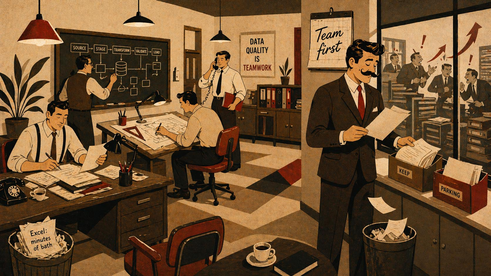
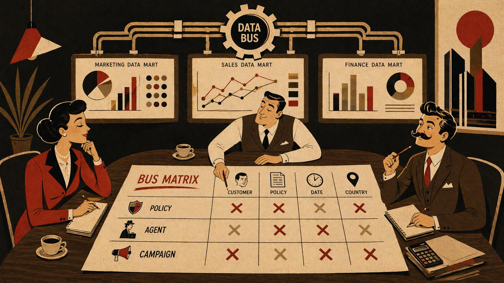
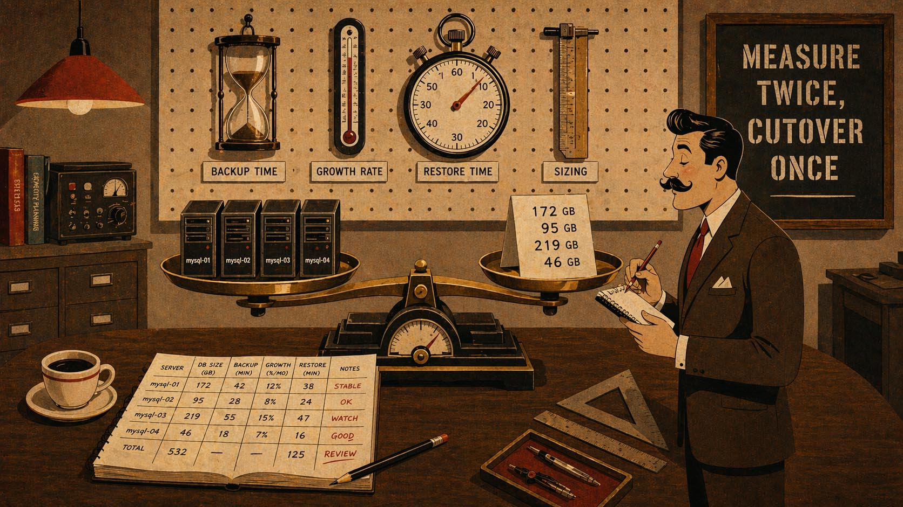
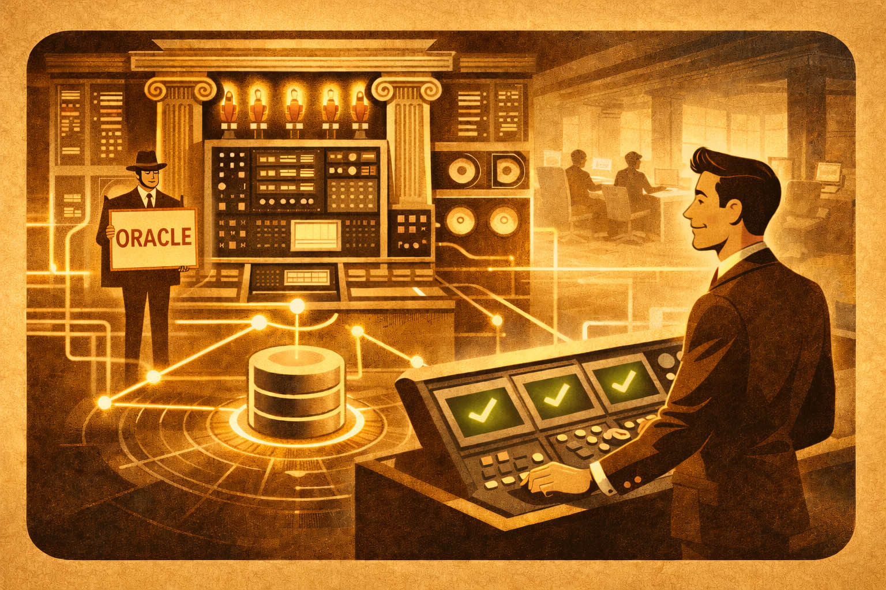

Ultimi articoli

Project Management
5 regole che ho visto funzionare nei team di progetto che reggono
Un PM che cronometrava i minuti passati in bagno, un altro che filtrava il rumore e lasciava lavorare. Cinque regole osservate da entrambi i lati del tavolo — da consulente e da responsabile — che ricorrono nei team di progetto che tengono sotto pressione.
Altri articoli recenti

Data Warehouse
Tre data mart, tre verità sulle vendite
Il bus matrix come terreno comune tra reparti.

MySQL
Prima di aggiornare MySQL: le cifre che il cliente ti chiede
Quattro server, quattro domande. Come rispondere con numeri misurati.

Oracle
Oracle da on-premises a cloud
Strategia, pianificazione e cutover.
Oracle

Oracle
AWR, ASH e i 10 minuti che hanno salvato un go-live
Diagnosi performance Oracle con gli strumenti giusti — dal rilevamento del collo di bottiglia alla fix in produzione.
Altri articoli Oracle

Oracle
Oracle su Linux — i parametri kernel che nessuno configura
Huge Pages, swappiness, I/O scheduler: il setup del sistema fa la differenza.

Oracle
Oracle ruoli e privilegi (GRANT ALL)
Perché GRANT ALL non è mai la risposta.

Oracle
Oracle Partitioning (2 miliardi di righe)
Range, hash, list: quale scegliere e quando.